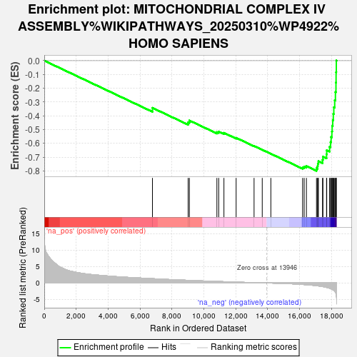
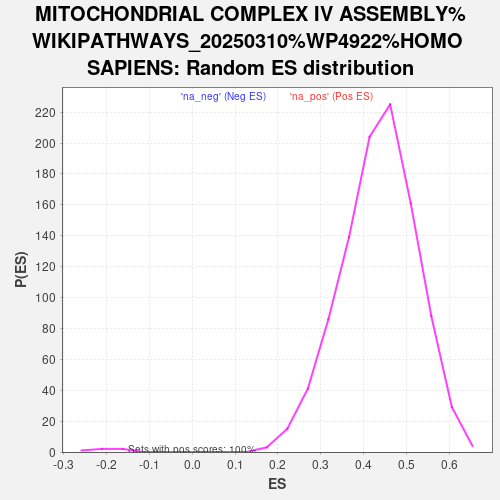

| | | Dataset | ranked_genes |
| Phenotype | NoPhenotypeAvailable |
| Upregulated in class | na_neg |
| GeneSet | MITOCHONDRIAL COMPLEX IV ASSEMBLY%WIKIPATHWAYS_20250310%WP4922%HOMO SAPIENS |
| Enrichment Score (ES) | -0.7985497 |
| Normalized Enrichment Score (NES) | -3.8272495 |
| Nominal p-value | 0.0 |
| FDR q-value | 0.0 |
| FWER p-Value | 0.0 |
Table: GSEA Results Summary

Fig 1: Enrichment plot: MITOCHONDRIAL COMPLEX IV ASSEMBLY%WIKIPATHWAYS_20250310%WP4922%HOMO SAPIENS
Profile of the Running ES Score & Positions of GeneSet Members on the Rank Ordered List
| SYMBOL | RANK IN GENE LIST | RANK METRIC SCORE | RUNNING ES | CORE ENRICHMENT | | 1 | COX19 | 6781 | 1.306 | -0.3420 | No |
| 2 | COX18 | 9019 | 0.804 | -0.4467 | No |
| 3 | CMC1 | 9098 | 0.789 | -0.4337 | No |
| 4 | HIGD1A | 10821 | 0.469 | -0.5176 | No |
| 5 | COX11 | 10935 | 0.449 | -0.5139 | No |
| 6 | COX15 | 11263 | 0.393 | -0.5232 | No |
| 7 | COX16 | 12028 | 0.262 | -0.5592 | No |
| 8 | COX20 | 13152 | 0.096 | -0.6185 | No |
| 9 | PET117 | 13664 | 0.028 | -0.6458 | No |
| 10 | COX10 | 14204 | -0.027 | -0.6747 | No |
| 11 | COA6 | 16194 | -0.451 | -0.7735 | No |
| 12 | SMIM20 | 16293 | -0.489 | -0.7682 | No |
| 13 | PNKD | 16434 | -0.536 | -0.7641 | No |
| 14 | PET100 | 17065 | -0.839 | -0.7802 | Yes |
| 15 | COX17 | 17131 | -0.878 | -0.7645 | Yes |
| 16 | COX1 | 17149 | -0.886 | -0.7461 | Yes |
| 17 | COX5B | 17186 | -0.908 | -0.7282 | Yes |
| 18 | COX14 | 17444 | -1.092 | -0.7183 | Yes |
| 19 | COX5A | 17470 | -1.112 | -0.6954 | Yes |
| 20 | TACO1 | 17695 | -1.339 | -0.6783 | Yes |
| 21 | SURF1 | 17707 | -1.358 | -0.6492 | Yes |
| 22 | COX7A2 | 17886 | -1.610 | -0.6238 | Yes |
| 23 | COX7C | 17945 | -1.714 | -0.5894 | Yes |
| 24 | NDUFA4 | 17982 | -1.789 | -0.5523 | Yes |
| 25 | COX3 | 18030 | -1.884 | -0.5137 | Yes |
| 26 | COX6C | 18048 | -1.917 | -0.4727 | Yes |
| 27 | COX8A | 18085 | -2.024 | -0.4304 | Yes |
| 28 | COX7B | 18119 | -2.139 | -0.3854 | Yes |
| 29 | COA3 | 18151 | -2.250 | -0.3379 | Yes |
| 30 | COX2 | 18207 | -2.488 | -0.2864 | Yes |
| 31 | COX4I1 | 18252 | -2.827 | -0.2270 | Yes |
| 32 | COX6B1 | 18286 | -3.216 | -0.1585 | Yes |
| 33 | COX6A1 | 18293 | -3.432 | -0.0837 | Yes |
| 34 | TMEM177 | 18308 | -3.918 | 0.0012 | Yes |
Table: GSEA details [plain text format]

Fig 2: MITOCHONDRIAL COMPLEX IV ASSEMBLY%WIKIPATHWAYS_20250310%WP4922%HOMO SAPIENS: Random ES distribution
Gene set null distribution of ES for MITOCHONDRIAL COMPLEX IV ASSEMBLY%WIKIPATHWAYS_20250310%WP4922%HOMO SAPIENS